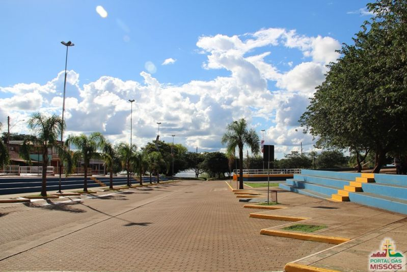

CAIS DO PORTO

O Cais do Porto de São Borja foi construído originalmente no século XIX para facilitar o transporte fluvial de mercadorias, servindo como um ponto de embarque e desembarque de produtos. Naquela época, o transporte por via fluvial era uma das principais formas de conectar as cidades e regiões, e o Rio Uruguai era uma importante rota comercial.
Com o passar do tempo, o Cais do Porto foi se tornando um local de grande importância para o desenvolvimento econômico da região. Era utilizado para o transporte de produtos agrícolas, como grãos e madeira, bem como para o embarque de gado. Através do cais, São Borja e outras cidades próximas podiam enviar suas mercadorias para outros lugares do Brasil e até mesmo para o exterior.
Hoje em dia, embora não tenha a mesma relevância econômica do passado, o Cais do Porto de São Borja continua sendo uma atração turística importante. Os visitantes podem caminhar ao longo do cais, apreciar a vista do rio e conhecer um pouco mais sobre a história e a importância desse local para a região.
Além disso, o Cais do Porto também é utilizado para eventos culturais e festividades locais, como festas tradicionais e comemorações. É um espaço de convivência e lazer para moradores e turistas, proporcionando uma atmosfera agradável à beira do rio.
Em resumo, o Cais do Porto de São Borja é uma estrutura histórica localizada às margens do Rio Uruguai. Desempenhou um papel importante no transporte fluvial de mercadorias no passado e hoje é uma atração turística e um espaço de convivência para a comunidade local.
CEMINTÉRIO PARAGUAIO
No local, há uma cruz e um pórtico lembrando a batalha e os mortos no combate, toda a região serviu de palco para batalhas contra os paraguaios comandados por Solano López, que invadiu o Brasil por São Borja, em 10 de janeiro de 1865, buscando estender a fronteira do Paraguai até o oceano Atlântico. Expulsos posteriormente pelo exercito brasileiro, hoje representado no Município pelo 2º Regimento de Cavalaria Mecanizada João Manoel, local onde há um espaço cultural, com toda a história e matérias dessa batalha.
Até hoje se encontra restos de armamentos nesses campos.
Igreja matriz São Francisco de Borja
A Igreja Matriz São Francisco de Borja
Construída no século XX no lugar de uma jesuítica, mantém algumas referências daquela época como detalhes apresentados nas fotos a seguir e imagens sacras no interior. Trata-se de um projeto que lembra três ocas indígenas do maior de todos os arquitetos brasileiros, senhor Oscar Niemeyer. Atuam como sacerdotes: Aodomar Wandscher e Luiz Diniz Lavarda. As celebrações eucarísticas ocorrem de terça-feira a sábado às 19:00; e aos domingos, pela manhã (às 9:00 (com transmissão ao vivo pela Rádio Cultura AM)) e às 19:00 (com o horário de verão, as Santas Missas dominicais são às 20:00). A Santa Igreja Católica Apostólica Romana tem um papel importantíssimo na construção da cidade de São Francisco de Borja, aliás foi ela quem aqui chegou primeiro (se tratando de brancos) com toda aquela história dos Sete Povos Missioneiros que tu já deves ter lido na página História e na de São Francisco de Borja, nosso padroeiro; além disso, ela possui ativos vários movimentos sociais como a Pastoral da Juventude e Pastoral da Criança. Sempre realiza eventos, como o tradicional almoço do Dia do Padroeiro em 10/out, Dia das Mães e demais festividades. Também tem o Movimento de Cursilhos da Cristandade e a Renovação Carimática Católica atuando firmes no local. Está localizada no ponto central do município ao lado da sede do governo municipal, em frente à Praça XV de Novembro.